Trails
Dedicated lanes
Bicycle-friendly roads
Dirt/unpaved trails
<<<<<<< HEAD
<<<<<<< HEAD
Icon
78°F
Icon
42%
Icon
2 mph N
Icon
23%
Icon
3 out of 11
Icon
45
Check out forecast information to see if today is a good day to bike.
======= ======= >>>>>>> 7a337fc34e3128518ae35ee10261b05d3258a840
78°F
Temperature
Bike Predict will check the temperature of your biking location.

32%
Humidity
Bike Predict will check the relative humidity of your biking location.

4 mph
Wind Speed
Bike Predict will check the wind speed and wind direction.

26%
Chance of Rain
Describes the chance of precipitation occuring at any point you select in the area.

3
UV Index
Bike Predict will check the UV Index of your biking location.

26
AQI
The Air Quality Index is measured from a scale of 0 to 500.